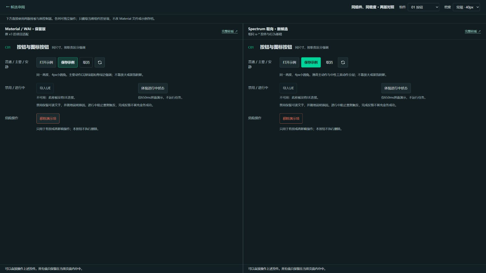

Material / WAI · 保留版
上一轮 v3 原件完整保留：常规40 / 紧凑32、八类基础样板、编辑/交付/导入代表页。原存档键不迁移、不覆盖。
两版使用相同的八类 u-* 控件、状态规则与示例内容。新稿收敛面板里的强调，区分主动作与等权工具动作；保持蓝灰/青绿、直角细边框。它是 FireWorks 的适配候选，没有安装或冒称 Adobe 官方组件库。
上一轮 v3 原件完整保留：常规40 / 紧凑32、八类基础样板、编辑/交付/导入代表页。原存档键不迁移、不覆盖。
中性等权控件、薄荷主动作、清楚的输入值字重、细轨滑杆与连续分段；紧凑时仍保留正文14 / 标签13，数字沿用原生步进和原校验。
| 层次 | 负责什么 | 现有B与本轮的关系 |
|---|---|---|
| 设计令牌 | 颜色、字阶、间距、形状、密度等可复用值与角色 | B继承v3颜色但有局部硬值；新稿回到统一u-*接口，新增局部Spectrum角色别名。 |
| 组件 | 按钮、输入、滑杆等具体外观、语义与交互 | B部分param-*另外实现；新稿直接消费v3八类共享控件。 |
| 组件库 | 组件集合、变体、状态、接口与可操作样板 | v3是共享候选基础，B是独立业务试验；新稿作为v3的另一视觉候选保留。 |
| 设计语言 | 信息层级、对齐、强调、形状和反馈的一致表达 | B重点探索分组与密度；本轮比较Material适配与Spectrum取向的控件语言。 |
| 设计系统 | 令牌、组件、模式、文档、版本治理和生产应用共同组成 | 目前是系统基础与候选，三工具迁移/完整领域组件与生产验收尚未完成。 |
按钮、字段、滑杆与数值、下拉、勾选/混选、单选、开关、短选项分段。它们不是“29类规范映射里 Material参考8类”的同一组统计。
新 Demo 沿用 v3 静态示例图与控制器，仅保存独立示例、下载 demoOnly JSON；未接真实烘焙、导出或UE。B的40真实参数与单层原核仍在原入口，本轮未把它移植或改名。
用并排操作页切换同一组件、同一密度，再在完整样板里检查菜单与焦点。打开对照视图

代码与五层差异 · 变体使用说明与官方依据 · 实际设计QA · 验证小数据
当前仍是候选评审。正式注册、B接入统一组件、真实参数/三工具迁移及UE验收需另行实施。